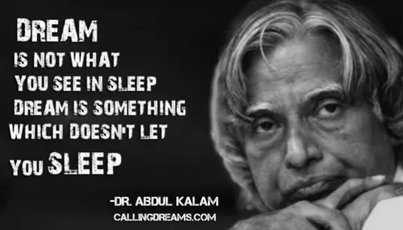

India is a nation of a billion people. A nation’s progress depends upon how its people think. It is thoughts which are transformed into actions. India has to think as a nation of a billion people. Let the young minds blossom – full of thoughts, the thoughts of prosperity.
Nations are built by the imagination and untiring enthusiastic efforts of generations. One generation transfers the fruits of its toil to another which then takes forward the mission. As the coming generation also has its dreams and aspirations for the nation’s future, it therefore adds something from its side to the national vision; which the next generation strives hard to achieve. This process goes on and the nation climbs steps of glory and gains higherstrength.
Any organisation, society or even a nation without a vision is like a ship cruising on the high seas without any aim or direction. It is clarity of national vision which constantly drives the people towards the goal.Our last generation, the glorious generation of freedom fighters, led by Mahatma Gandhi, and many others set for the nation a vision of free India. This was the first vision, set by the people for the nation. It therefore went deep into the minds and the hearts of the masses and soon became the great inspiring and driving force for the people to collectively plunge into the struggle for freedom movement. The unified dedicated efforts of the people from every walk of life won freedom for the country.
The next generation has put India strongly on the path of economic, agricultural and technological development. But India has stood too long in the line of developing nations. Let us, collectively, set the second national vision of Developed India. I am confident that it is very much possible and can materialise in 15 – 20 years’ time.
What does the developed nation status mean in terms of the common man? It means the major transformation of our national economy to make it one of the largest economies in the world, where the countrymen live well above the poverty line, their education and health is of high standard, national security reasonably assured, and the core competence in certain major areas gets enhanced significantly so that the production of quality goods, including exports, is rising and thereby bringing all-round prosperity for the countrymen. What is the common link needed to realise these sub goals? It is the technological strength of the nation, which is the key to reach this developed status.
The next question that comes to the mind is, how can it be made possible? We have to build and strengthen our national infrastructure in an all-round manner, in a big way. Therefore, we should build around our existing strengths including the vast pool of talented scientists and technologists and our abundant natural resources. The manpower resource should be optimally utilised to harness health care, services sectors and engineering goods sectors. We should concentrate on development of key areas, namely agriculture production, food processing, materials and also on the emerging niche areas like computer software, biotechnologies and so on. The common link required to bring this transformation is the human resources. Therefore, adequate attention needs to be paid to development of special human resource cadre in the country to meet these objectives.
The attainment of a developed status by 2020 does not mean that we can then rest on our laurels. It is an endless pursuit of well-being for all our people. Our vision of a developed nation integrates this element of time within it as well. Only people with many embodied skills and knowledge, and with ignited minds can be ready for such a long-term vision. We believe that it is possible to develop our people to reach such a state, provided we can follow a steady path and make available to the people the benefits of change all through their lives. They should see their lives and those of others improving in actual terms, and not merely in statistical tables.
This means the vision should become a part of the nation, transcending governments – the present and the future. To make this happen, several actions are required. An important element of these efforts is to develop various endogenous technological strengths. After all, technologies are primarily manifestations of human experience and knowledge and thus are capable of further creative development, under enabling environments.
We have often asked ourselves and others why India in its several thousand years of history has rarely tried to expand its territories or to assume a dominating role. Many of the experts and others with whom we had a dialogue referred to some special features of the Indian psyche which could partly explain this: greater tolerance, less discipline, the lack of a sense of retaliation, more flexibility in accepting outsiders, great adherence to hierarchy, and emphasis on personal safety over adventure. Some felt that a combination of many of these features has affected our ability to pursue a vision tenaciously.
We believe that as a nation and as a people we need to shed our cynicism and initiate concrete action to realise the second vision for the nation. The first vision, seeded around 1857, was for India to become politically independent; the second one is to become a fully developed nation. Our successful action will lead to further action, bringing the vision much closer to reality. Perhaps in a decade from now we may even be judged as having been cautious and conservative! We will be happy if the action taken proves that they could have been still bolder in advocating a faster march towards a developed India!
We had written this chapter before the nuclear tests on 11 May 1998. The details of the numbers projected in the tables and figures may change but our belief in what we say there remains unchanged. In any case, they are meant to be indicative of directions for change. We have seen the reactions to the tests within the country in the Indian and foreign media. We have also had the benefit of private conversations with many Indians. In all these, I observed one striking feature: a number of persons in the fifty-plus bracket and especially those who are in powerful positions in government, industry, business and academia, seem to lack the will to face problems. They would like to be supported by other countries in every action we have to take in the country. This is not a good sign after fifty years of an independent India which has all along emphasised ‘self reliance’.
We are not advocating xenophobia nor isolation. But all of us have to be clear that nobody is going to hold our hands to lead us into the ‘developed country club’. Nuclear tests are the culmination of efforts to apply nuclear technology for national security. When we carried out the tests in May 1998, India witnessed issuing of sanctions by a few developed countries. In the process, the same countries have purposely collapsed their own doctrine of global marketing, global finance systems and global village. Hence India has to evolve its own original economic policy, as well as development, business and marketing strategies.
It is not just that the Indian nuclear tests are resented. If tomorrow Indian software export achieves a sizable share in the global market, becoming third or fourth or fifth in size, we should expect different types of reactions. Today, we are a small percentage of the total trade in software or information technology. Similarly, if India becomes a large enough exporter of wheat or rice or agro-food products to take it into an exclusive club of four or five top food grain-exporting nations, various new issues would be raised couched in scientific and technical terms ranging from phyto-sanitary specifications to our contribution to global warming. Multilateral regimes to these effects exist in terms of General Agreement on Trade and Tariffs (GATT) and other environment-related multilateral treaties. India cannot afford not to sign these treaties, though we could have done our homework a little better during the negotiations. We have to face what we have with us. We need to play the multilateral game, attract foreign investments, have joint ventures and be an active international player. Still, we have to remember that those who aim high, have to learn to walk alone too, when required.
There are economic and social problems in South-East Asia and Japan. Each country is trying to tackle them in its own way. There is a variety in the approaches. Some may overcome the difficulties and some may not. We believe India can still emerge a major developed country and all its people can contribute to and share in the prosperity. Our hope lies in the fact that even in the older generation, there are a number of persons who are ready to face the challenges. Most of the people are proud to see an India that is bold. In addition, the younger generation is ready to take action in such a complex environment. Many of them have to contend with difficult hierarchial structures in the Indian systems, whether in the private or public sector, in government or in academia. They are ready to rough it out. That is where our hopes lie for the realisation of the Second Vision.